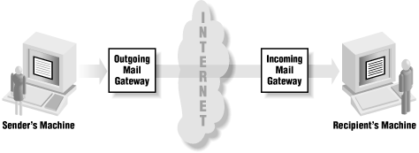

|  |
9.4. Proxying Without a Proxy Server
Some services, such as SMTP, NNTP, and NTP, naturally support proxying. These services are all designed so that transactions (email messages for SMTP, Usenet news postings for NNTP, and clock settings for NTP) move between servers, instead of going directly from a client to a final destination server. For SMTP, the messages are forwarded towards an email message's destination. NNTP forwards messages to all neighbor servers. NTP provides time updates when they're requested but supports a hierarchy of servers. With these schemes, each intermediate server is effectively acting as a proxy for the original sender or server.If you examine the "Received:" headers of incoming Internet email (these headers trace a message's path through the network from sender to recipient), you quickly discover that very few messages travel directly from the sender's machine to the recipient's machine. It's far more common these days for the message to pass through at least four machines:
- The sender's machine
- The outgoing mail gateway at the sender's site (or the sender's Internet service provider)
- The incoming mail gateway at the recipient's site
- Finally, the recipient's machine

Figure 9-3. Store-and-forward services (like SMTP) naturally support proxying
|  | |
| 9.3. Proxy Server Terminology |  | 9.5. Using SOCKS for Proxying |